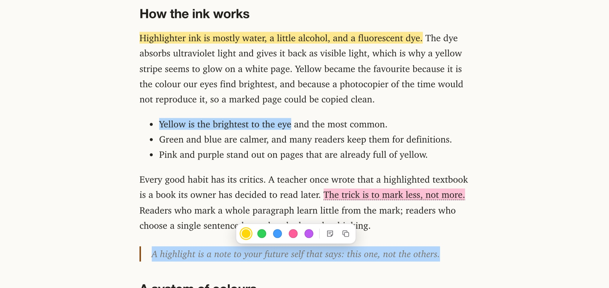
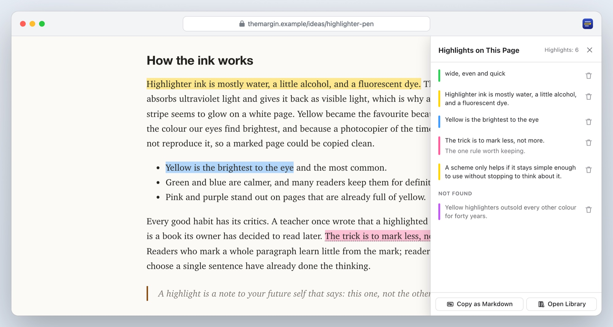
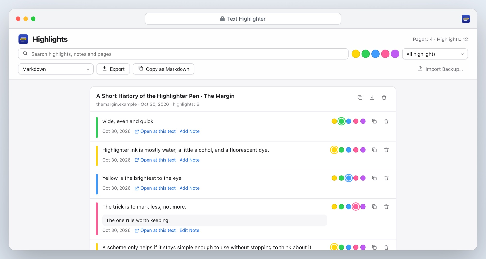
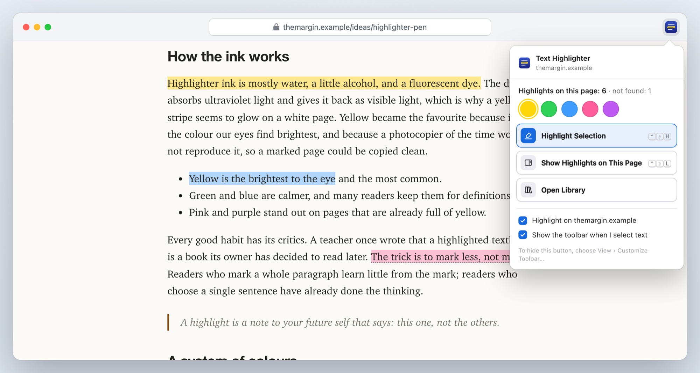
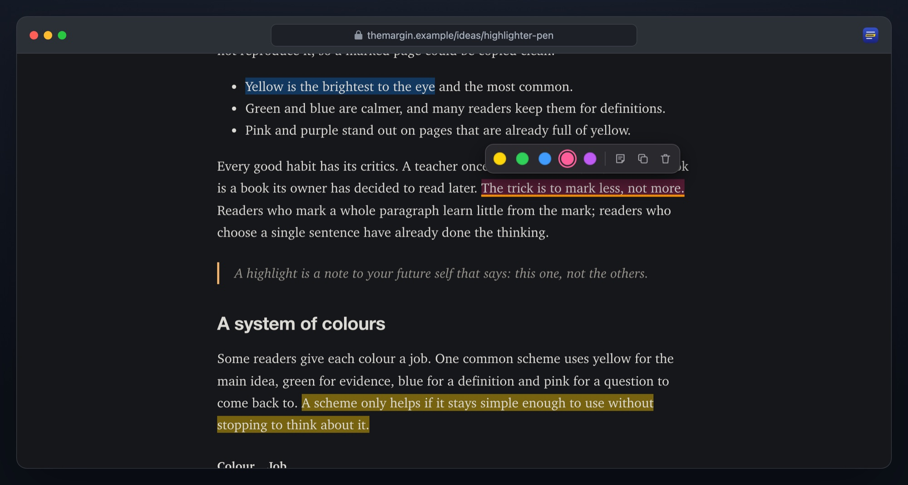

A Safari extension for Mac, iPhone and iPad
Highlight the web. Find it again.
Text Highlighter marks text on any web page the way a highlighter pen marks paper. Pick one of five colours, add a note, and come back whenever you like: your highlights are still there, even after the page has changed.
€1.99 once, for Mac, iPhone and iPad · macOS 14 and iOS 18 or later · No data collected

Select, pick a colour, done
No account to make and nothing to set up.
1. Select text
A bar with five colours appears next to it. On a Mac you can also press ⌃⇧H or right-click and choose Highlight Selection.
2. Add a note
Click any highlight to change its colour, write a note beside it, copy it or remove it.
3. Come back
Open the page again tomorrow or next year. Your highlights are where you left them.
Highlights that come back
Web pages change. Text Highlighter remembers what your text said, not only where it was.
On the page
Every highlight, one click away
A side panel lists the page’s highlights in reading order. Click one to jump to it; copy them all as Markdown in one click.
- Found again when the page has moved or a few words changed
- Text that loads late is highlighted as soon as it appears
- A quote the page no longer has is kept and marked “not found”, never thrown away

The library
All your highlights, searchable
Every page you’ve marked, newest first. Search quotes, notes and page titles, show one colour or only highlights with notes, and open any page right at the quote.
- Edit notes and colours, remove with Undo
- Export to Markdown, to Obsidian (a note per page), or to a Readwise CSV
- Back up everything to a file, and restore it on another device

Quick
From the toolbar, the menu or the keyboard
The toolbar button shows how many highlights the page has, lets you pick the colour for new ones, and turns highlighting off for a site you’d rather leave alone.
- ⌃⇧H highlights the selection, ⌃⇧L shows the page’s highlights
- Right-click: Highlight Selection
- On iPhone and iPad: select text and tap a colour

Every page
Light and dark pages alike
The marks are translucent, so the page’s own text stays readable on white pages and dark ones. And the page itself is never changed: websites keep working exactly as before.
- Notes are marked with a dotted underline
- Select across a highlight to extend it; highlights never pile up

And all the small things
Private
No account, no analytics, nothing sent anywhere. Your highlights stay in Safari on your device.
Mac, iPhone and iPad
One purchase for all three.
Light and dark
The bar, the panel and the library follow your device.
Eleven languages
English, German, French, Spanish, Italian, Portuguese, Japanese, Korean and Chinese.
Frames and components
Text in embedded frames and in web components can be highlighted too.
Open at the quote
Links from the library open the page scrolled to your highlight.
Text Highlighter
€1.99 once
- One-time purchase, no subscription, no account
- Mac, iPhone and iPad with one purchase
- macOS 14 or later, iOS and iPadOS 18 or later, with Safari 18 or later
- Every feature included
Prices in other countries are set by the App Store.
Questions
Why does it need access to the websites I visit?
So your highlights can reappear when you come back to a page, without a click. Text Highlighter reads a page only to find your own highlighted text, keeps everything on your device and sends nothing anywhere. You can turn it off for any site from its toolbar button, or allow it only on the sites you choose in Safari’s settings.
What happens when a page changes?
Each highlight remembers its words and the words around them. If the text moved, it’s found where it went. If a few words changed, the closest match is found. If the text is gone, the highlight is kept in the library and the page’s panel, marked “not found”, so your quote and note are never lost.
Do my highlights sync between my Mac and iPhone?
Not yet. Each device keeps its own highlights. You can move them with Export, Backup and Import Backup in the library.
Which pages can I highlight?
Any web page. Safari doesn’t let extensions into its own pages, such as Settings or the Start Page, or into PDF files.
How do I export to Obsidian or Readwise?
In the library, choose Obsidian (a note per page, in a ZIP) or Readwise CSV, then Export. Readwise imports the CSV on its import page; Obsidian notes go into your vault folder.
What data does it collect?
None. Read the privacy policy.